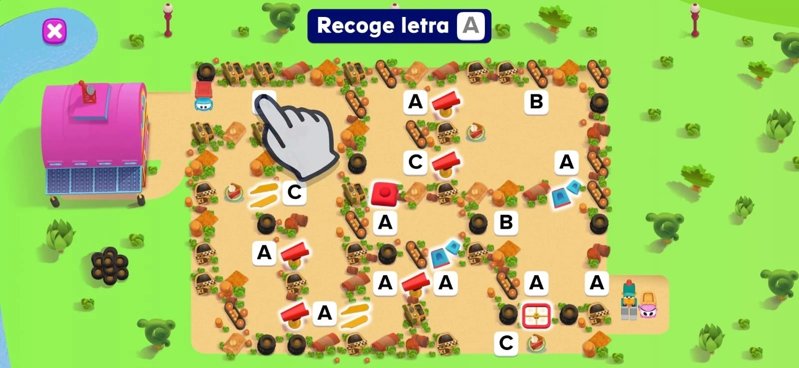
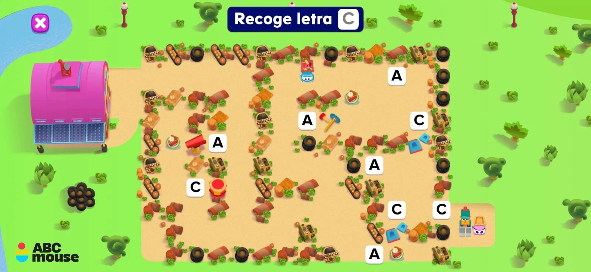
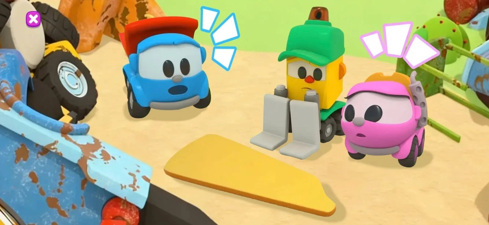

Leo the Truck Reskins
Licensed reskins of existing ABCmouse games, built entirely on the art side with no engineering changes.
- Studio
- Age of Learning
- Role
- Technical Artist
- Tools
- Unity, Rive
- Year
- 2026

Overview
Age of Learning partnered with a major children's animation franchise to bring its characters into the flagship ABCmouse app. The challenge was to create new licensed titles out of games that already existed, without touching their original logic or layout.
As the Technical Artist leading art implementation, I built new state machines in Unity and a piece-randomization system that reskins each game completely. The art team delivered the whole thing self-contained, so no engineering changes were needed.
The randomizer works through the state machine. Every time a new session starts, it picks one of 10 different timelines, connected by a blend, and each timeline holds a different piece of the asset. That way the assets look different in every session, while the game's code stays exactly the same.
What I did
- Worked from Rive-authored animation and prototyped the gameplay directly from it, ready for engineering handoff.
- Built new state machines that drive the reskinned art without changing the original game's logic or layout.
- Designed the piece-randomization system: 10 timelines joined by a blend, one asset piece each, chosen at the start of every session.
- Kept delivery fully self-contained for the art team, so the reskins did not need engineering time.
- Flagged integration risks early, such as the Rive-to-engineering handoff timing, to keep the roadmap realistic.
Gallery


